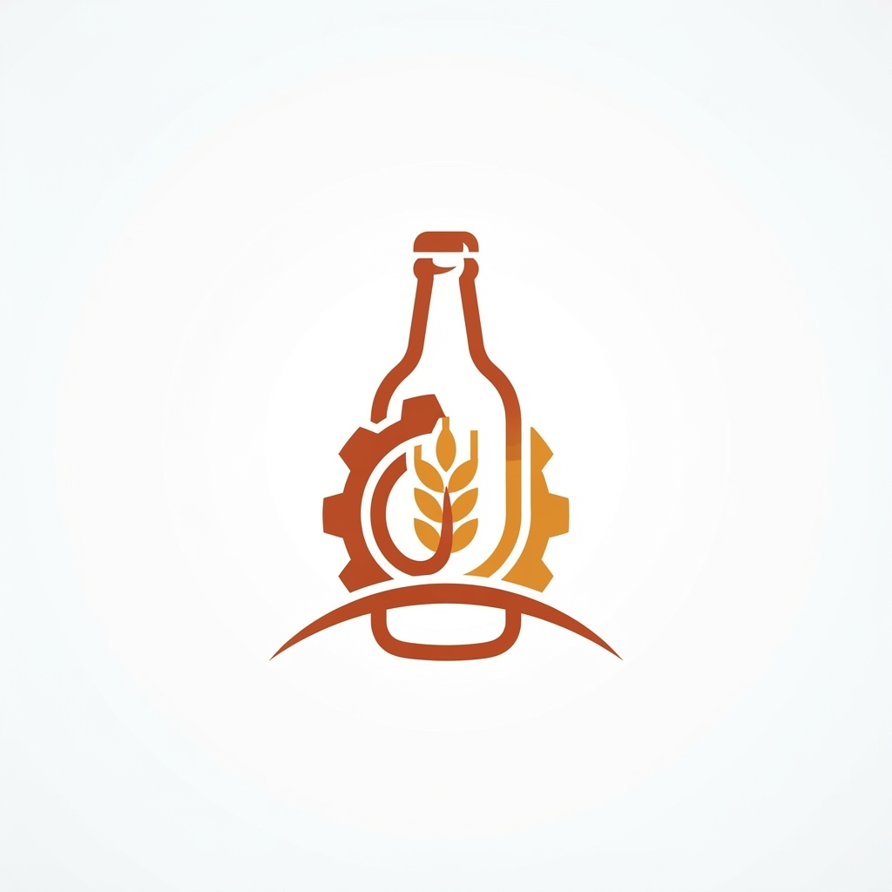

Мастер АртемийПривезем вино водку пиво виски коньяк и текилу прямо к вашей двери в Кудрово за 30-90 минут с оплатой любым удобным способом★★★★★4.518+. Чрезмерное употребление опасно для здоровья.
Привозим за 30–90 минутБыстрая доставка напитков в Кудрово за 30-90 минут
Жители Кудрово часто полагают, что доставка требует долгого ожидания или сложных согласований с магазином. На самом деле, всё работает проще: вы выбираете напитки, а мы оперативно перемещаем их к вам. Не нужно никуда ехать или беспокоиться о тяжелых пакетах. Мы работаем каждый день, чтобы ваш отдых дома стал максимально комфортным и предсказуемым.
Кто мы
Мы — служба «Мастер Артемий», и мы знаем, что ожидание праздника часто утомляет больше самого процесса. Пока вы выбираете фильм или расставляете тарелки, мы берем на себя логистику вашего досуга. Привезем вино, водку, пиво, виски, коньяк и текилу прямо к вашей двери в Кудрово за 30-90 минут с оплатой любым удобным способом. Никаких лишних движений, только проверенные напитки, которые окажутся на вашем столе ровно тогда, когда вы будете к этому готовы.
Ответы на вопросы
Как быстро вы привезете мой заказ в Кудрово?
Мы доставляем заказы в течение 30-90 минут в зависимости от текущей загруженности дорог в вашем районе Кудрово.
Нужно ли мне спускаться к курьеру на улицу?
Вы получаете напитки прямо у двери своей квартиры, курьер передает пакет лично в руки после подтверждения оплаты.
Могу ли я вернуть товар, если передумал?
Мы работаем согласно правилам продажи товаров дистанционным способом и всегда готовы рассмотреть ситуацию при обнаружении заводского брака.
Почему доставка иногда занимает больше часа?
Наши сроки составляют от тридцати до девяноста минут, так как мы ценим ваше время и стремимся к максимальной скорости.
Будет ли курьер звонить перед приездом?
Наши курьеры — вежливые и пунктуальные люди, которые знают все короткие пути в Кудрово и соблюдают тишину в подъездах.
Как проходит заказ
Шаг 1: Изучите наш удобный каталог на сайте, где представлены все напитки для вашего праздничного вечера.
Шаг 2: Добавьте в корзину нужные позиции, выбирая из большого ассортимента крепких и легких напитков.
Шаг 3: Укажите точный адрес в Кудрово, чтобы наш курьер нашел вас без лишних вопросов и задержек.
Шаг 4: Выберите способ оплаты: картой, наличными или удобным переводом, который сэкономит ваше время.
Шаг 5: Оформите заказ и ожидайте курьера, который прибудет к вам в течение тридцати-девяноста минут.
Шаг 6: Получите ваш заказ у дверей дома и наслаждайтесь вечером, не тратя время на походы по магазинам.
Отзывы покупателей
Все привезли быстро, напитки были холодными. Очень удобно, когда не нужно выходить из дома в плохую погоду.4.6
Заказывала на вечеринку, привезли через сорок минут. Все бутылки целые, упаковка аккуратная, буду заказывать еще.4.6
Ребята работают оперативно, курьер позвонил заранее. Сервис в Кудрово стал заметно лучше благодаря таким услугам.4.7
Часто пользуюсь этим сайтом. Всегда все есть в наличии, цены адекватные, доставка никогда не подводила по времени.4.7
Хороший выбор и вежливое общение. Оплатил переводом, заняло буквально пару секунд. Рекомендую всем, кто ценит комфорт.4.8
Андрей4.9
Порядок без сюрпризов
Мы гарантируем доставку вашего заказа в строго оговоренный интервал от тридцати до девяноста минут в любую точку Кудрово.
Все напитки хранятся на складах с соблюдением правильной температуры и влажности, чтобы сохранить их вкус до момента открытия.
Вы платите только за выбранные напитки по честным ценам, мы не меняем стоимость товаров в процессе оформления вашего заказа.
Курьер доставляет заказ прямо до вашей двери, вручая пакет лично в руки без каких-либо посредников или лишних ожиданий.
Мы строго соблюдаем закон о дистанционной торговле и возвращаем средства, если товар не соответствует стандартам качества при получении.
Вы можете оплатить покупку удобным вам способом: банковской картой, наличными курьеру или быстрым переводом на наш банковский счет.
Где мы и как писать
Оформить заказ
Изучите наш ассортимент на сайте или просто напишите нам в Телеграм прямо сейчас. Мы на связи, чтобы оперативно собрать ваш заказ и отправить его по указанному адресу в Кудрово. Звоните, если предпочитаете живой диалог, или оформляйте заявку онлайн. Ваш вечер начинается с нашего визита, так что не откладывайте приятные дела на потом.
Открыть витрину